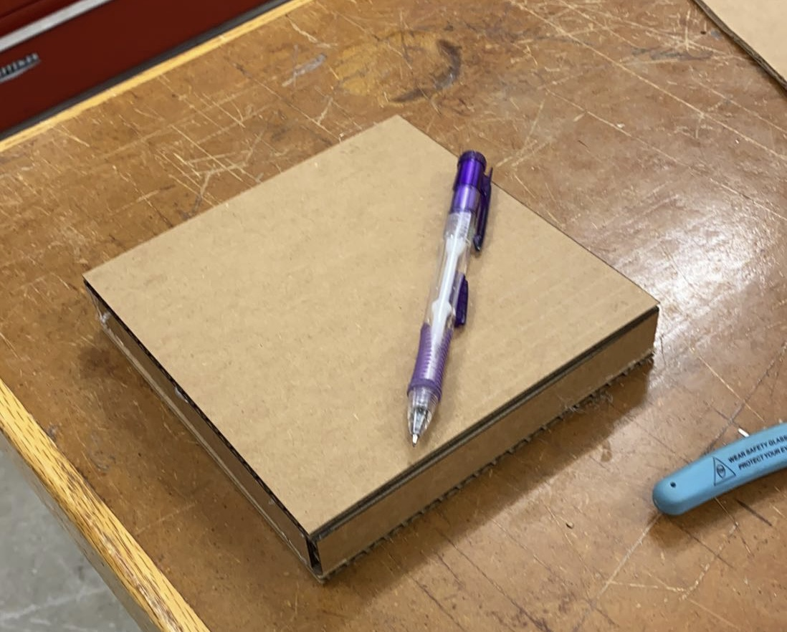

<br>
#### Week 3: Kinetic Sculpture
Objectives: Create a kinetic sculpture.
Include circuitry to move your sculpture.
Use Ohm's law to calculate current through the circuit.
The theme of my week 3 project is “Matching to the tone”. When I was younger, I was in a marching band. I used to march and play music for hours in parades and had so much fun doing it. I thought it would be cool to make something that reminds me of those days. So, I decided to make something that would mimic the movement of someone marching.
I decided to work from the bottom up, starting with my base. I wasn't sure how big I wanted it at first. I measured some cardboard in class to get an idea of what it might look like. I created a 100 by 100 square in Fusion360. After creating that file as a DXF, I print it out on the laser cutter. After printing it out, super glue all the parts together. You can see the final results in the image down below.


# The Marching Machine
##"Matching to the tone"
By Shekinah Newson
<video width="500px" height="500px" controls>
<source src="IMG5104_2.mp4" type="video/mp4">
</video>